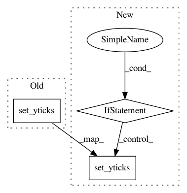

aee37a2471694eba60816541671c1f892ce2feeb,arviz/plots/backends/matplotlib/traceplot.py,,plot_trace,#Any#Any#Any#Any#Any#Any#Any#Any#Any#Any#Any#Any#Any#Any#Any#Any#Any#Any#Any#Any#Any#Any#Any#Any#Any#Any#,17
Before Change
if value[0].dtype.kind == "i":
xticks = get_bins(value)
axes.set_xticks(xticks[:-1])
axes.set_yticks([])
axes.set_title(make_label(var_name, selection), fontsize=titlesize, wrap=True, y=1)
axes.tick_params(labelsize=xt_labelsize)
xlims = axes.get_xlim()
After Change
if value[0].dtype.kind == "i" and idy == 0:
xticks = get_bins(value)
ax.set_xticks(xticks[:-1])
if not idy:
ax.set_yticks([])
ax.set_title(make_label(var_name, selection), fontsize=titlesize, wrap=True, y=1)
ax.tick_params(labelsize=xt_labelsize)
xlims = ax.get_xlim()
In pattern: SUPERPATTERN
Frequency: 3
Non-data size: 3
Instances
Project Name: arviz-devs/arviz
Commit Name: aee37a2471694eba60816541671c1f892ce2feeb
Time: 2020-08-27
Author: agustinaarroyuelo@gmail.com
File Name: arviz/plots/backends/matplotlib/traceplot.py
Class Name:
Method Name: plot_trace
Project Name: theislab/scanpy
Commit Name: c86127eb395817a446fbf8b44fb2763cf3cd6a6a
Time: 2018-07-13
Author: fidel.ramirez@gmail.com
File Name: scanpy/plotting/anndata.py
Class Name:
Method Name: heatmap
Project Name: rodluger/starry
Commit Name: 73bf812cc5598a0e6efb20d11de6568a80125a21
Time: 2018-04-29
Author: rodluger@gmail.com
File Name: misc/stability/brgrid.py
Class Name:
Method Name: RMinusOneRPlusOne